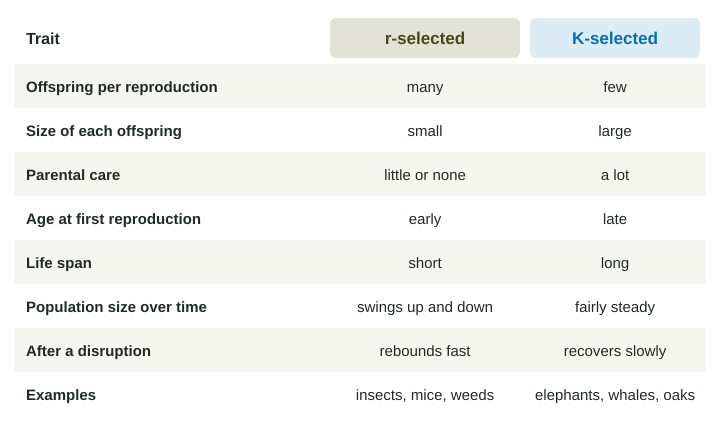

K-Selected r-Selected Species
r-selected species have many small offspring, little parental care, early reproduction and short lives; they have a high biotic potential, their populations swing up and down, and they rebound quickly after a disruption.
Part 1 · Hook
Why this matters
Part 2 · Before you start
What this builds on
Part 3 · Prerequisite check
Quick check before you start
1. Which kind of species can switch to other foods when its main food declines?
- A generalist
- A specialist
- A keystone species
- A pioneer species
Show the answer
Generalists have broad niches, so they have other foods to switch to.
- Correct: A generalist:
- A specialist:
- A keystone species:
- A pioneer species:
2. After a fire, which plants usually arrive first on the bare soil?
- Fast-growing grasses and weeds
- Slow-growing oaks
- Mature hickory trees
- Lichens on bare rock
Show the answer
Pioneer species in secondary succession are fast-growing grasses and weeds.
- Correct: Fast-growing grasses and weeds:
- Slow-growing oaks:
- Mature hickory trees:
- Lichens on bare rock:
Part 4 · See it
See it first

Part 5 · Step by step
How it works, step by step
- An r-selected species produces many small offspring early in life and gives them little caremost offspring die young, but the population can grow very quickly when conditions are good
- A disruption kills much of the populationan r-selected species rebounds fast, because each survivor can soon produce many offspring
- A K-selected species produces few large offspring late in life and cares for themmore of each offspring survive, but the population grows slowly and recovers slowly after losses
Part 6 · Key ideas
Key ideas
- Biotic potential is the fastest rate at which a population could grow if it had unlimited resources. r-selected species have a high biotic potential; K-selected species have a low one.
- r-selected species: many small offspring, little or no parental care, early first reproduction, short lives. Insects, mice, many fish and weeds.
- K-selected species: few large offspring, much parental care, late first reproduction, long lives. Elephants, whales, great apes, many large trees.
- K-selected populations tend to stay near the largest size their environment can support; r-selected populations swing up and down. After a disruption, r-selected species rebound quickly; K-selected species recover slowly and are more at risk of dying out.
Part 7 · Misconception
A common mistake
The wrong idea: A species is either r-selected or K-selected, nothing in between.
What actually happens: r and K are the two ends of a range. Many species are in between: sea turtles lay many eggs and give no care (r-like) but live long and start breeding late (K-like).
Part 8 · Check yourself
Check yourself
Exam-style questions. Anything you miss goes into your review queue.
Data
Reproduction in four animals
| Species | Offspring per year | Age at first breeding (years) | Parental care | Typical life span (years) |
|---|---|---|---|---|
| Field mouse | 30 | 0.2 | a few weeks | 1 |
| Pond frog | 2,000 | 2 | none | 5 |
| Gorilla | 0.25 | 10 | about 4 years | 40 |
| Albatross | 0.5 | 8 | about 1 year | 50 |
1. Which species in the table shows the most K-selected traits?
- Gorilla
- Field mouse
- Pond frog
- Albatross and pond frog equally
Show the answer
K-selected: few offspring, late breeding, long care, long life.
- Correct: Gorilla: Right: very few offspring, late first breeding, about 4 years of care and a long life.
- Field mouse: Many offspring, very early breeding and a short life are r-selected traits.
- Pond frog: Thousands of offspring and no care are r-selected traits.
- Albatross and pond frog equally: The frog’s traits are strongly r-selected; the two are not alike.
2. Which species in the table gives its offspring the least parental care?
- Field mouse
- Pond frog
- Gorilla
- Albatross
Show the answer
Little or no care is an r-selected trait.
- Field mouse: Mice nurse their young for a few weeks.
- Correct: Pond frog: Right: the table lists no care at all for the frog.
- Gorilla: Gorillas care for their young for about 4 years.
- Albatross: Albatrosses care for their chick for about a year.
3. Using the table, estimate how many offspring a field mouse produces in its typical life span. It breeds only from its age at first breeding to the end of its life span.
Type a number, then its unit (offspring). Scale words (2.5 million) and powers of ten (2.5 × 10^6) are read.
Show the answer
Offspring per year times the years it can breed:
- Answer: 24 offspring
Passage
Two ways to come back
After a hard winter, the vole population in a northern meadow fell from about 200 per hectare to 10. By the end of the next summer it was back above 150: a female vole can breed at a few weeks old and raise several litters a year. In the same region, commercial whaling from the 1800s to the early 1900s cut bowhead whales to a few thousand animals. Bowheads begin breeding at about 25 years old and have one calf every three or four years, after a pregnancy of over a year. Even with protection from commercial hunting since the 1930s, the western Arctic population took most of a century to grow back to more than 10,000. A species’ way of reproducing, the authors argue, decides how quickly it can make up for losses, and should shape how much hunting or fishing it can take.
Invented passage for practice, based on the general biology of voles and on NOAA Fisheries facts about bowhead whales.
4. Which evidence from the passage best supports the claim that the whales recover slowly?
- They first breed at about 25 and calve each 3 to 4 years
- Whaling cut them to a few thousand
- They live in the same northern region as the voles do
- They have been protected since the 1930s
Show the answer
Recovery speed comes from reproductive traits.
- Correct: They first breed at about 25 and calve each 3 to 4 years: Right: late breeding and few offspring explain slow recovery.
- Whaling cut them to a few thousand: That explains why they fell, not why recovery is slow.
- They live in the same northern region as the voles do: Location does not explain the speed of recovery.
- They have been protected since the 1930s: Protection allows recovery; it does not explain its pace.
5. Which harvest rule fits the passage’s argument best?
- Take an equal share of each species each year
- Take a smaller share each year from slow-reproducing species
- Take more from species that live longer, since there are more old animals
- Stop counting populations once a species is protected
Show the answer
K-selected species can sustain only light harvests.
- Take an equal share of each species each year: The passage argues that different reproductive strategies need different limits.
- Correct: Take a smaller share each year from slow-reproducing species: Right: species that replace losses slowly can sustain only small harvests.
- Take more from species that live longer, since there are more old animals: Long-lived, slow-breeding species are the ones that recover slowly.
- Stop counting populations once a species is protected: Counting is how a recovery like the whales’ is tracked.
6. What is biotic potential?
- The largest number of different species an area can hold
- The number of offspring that survive to adulthood
- The total mass of the living things in an area
- The fastest growth a population could reach with no limits
Show the answer
High biotic potential: many offspring, early and often.
- The largest number of different species an area can hold: That would describe species richness, not biotic potential.
- The number of offspring that survive to adulthood: Biotic potential is the fastest possible growth, not actual survival.
- The total mass of the living things in an area: That is biomass.
- Correct: The fastest growth a population could reach with no limits: Right: it is the fastest possible growth, set by reproductive traits.
Part 9 · Summary
Summary
Part 10 · Up next
What comes next
Part 11 · Connections